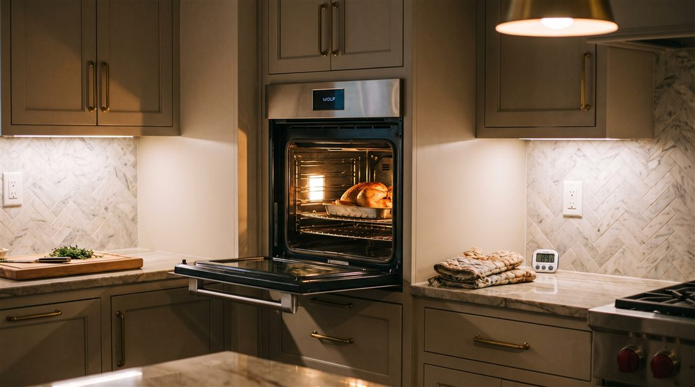
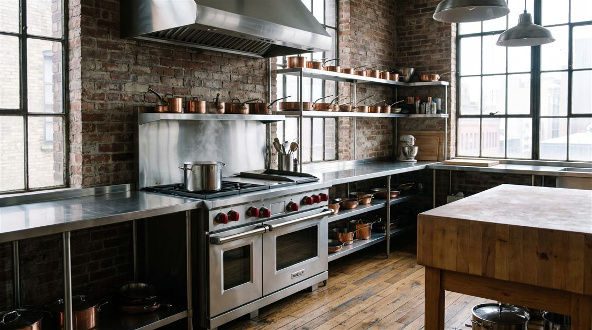
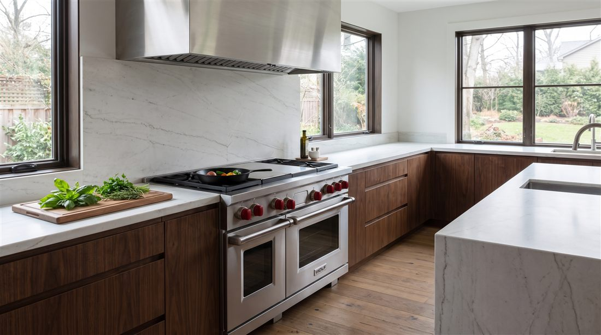

Thermador cooking
Where the heat lives.

Oven not heating
Cold cavities, endless preheats, or heat that quits before the food is done.
The full story
Uneven baking
Hot corners and pale centers. Airflow, elements, or calibration, and we find which.
The full story
Burner clicking
Star Burners sparking without a flame, or clicking on long after ignition.
The full story
Simmer and flame faults
An ExtraLow that dies out, flames that surge tall, or a burner stuck at one output.

Door and hinge trouble
Doors that drop, drift open, or let the heat escape past a tired gasket.
The full story
Self clean lockouts
A clean cycle that ends in a sealed door or a blank display. A weekly sight for us.